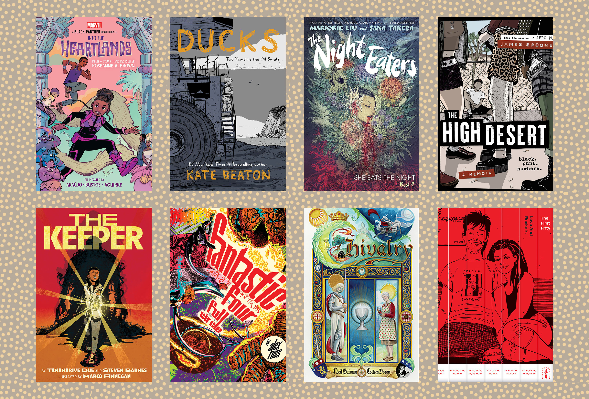
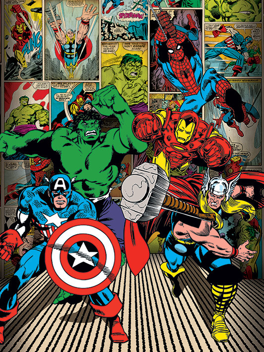
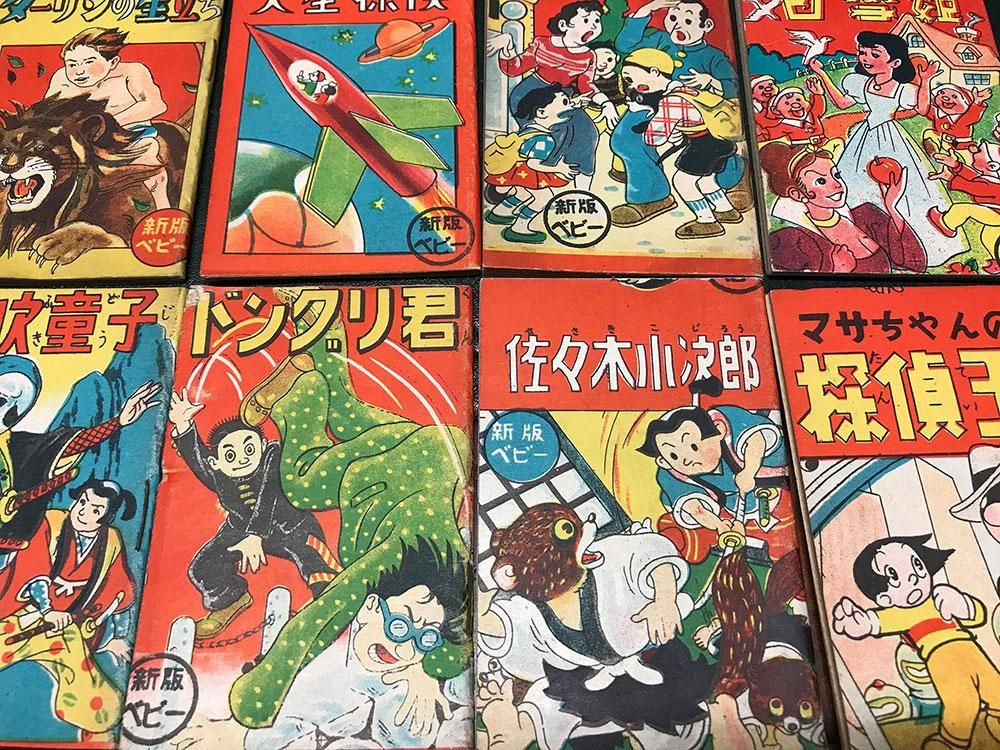
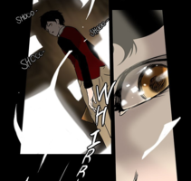

Introduction
Welcome to my web page about reading graphic novels. To begin, graphic novels come in all sorts of different styles and genres. For example, they can be romance, action, horror, etc. It is often the perfect balance between art and storytelling.

Some classic ones we see in western culture is the use of superheroes in comics as shown by the globally famous Marvel and DC series containing some of most favored super heroes such as Spiderman, Batman, Ironman, Black Widow, and so many more. These amazing series are great mediums for entertainment, fostering imagination, and representation of diversity.

One of my favorite graphic novels based on a true story is called Smile by Raina Telgemeler; this book received many awards including being a best-seller for four years, the Boston Globe-Horn Book Honor, and the Eisner Award for Best Publication for Teens.
In this webpage I am going to inform you about two other forms of graphic novels closer to east asian culture.
Manga
There is one called Manga, which is a Japanese-style comic book series that was popularized between 1950 to 1969. It is formally described as, “ an umbrella term for a wide variety of comic books and graphic novels originally produced and published in Japan. Unlike American comic books, which are usually printed in full color, Japanese manga are almost always published in black and white”. There have been many occasions where amazing mangas have been adapted into anime with high-quality production.

Webtoon
There is one called Webtoons or commonly called Manhwa which is a Korean-style comic book series popularized in the 2000s. It is formally described as, “A webtoon is a type of digital comic that originated in South Korea and is read vertically by scrolling down on a computer or smartphone. Accessible anywhere and practically free of charge, each episode takes less than five minutes to read”. It is commonly read on a popular app called Webtoon and nowadays artists from all over the world are able to create their own styled comics and make their work both profitable and accessible all over technology.
